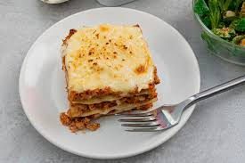

Lasagna Recipe

Description
Lasagnes de veau, le plat traditionnel encore plus savoureux
Et si vous changiez votre recette classique pour ces lasagnes de veau, plus tendres et encore plus savoureuses ?
Essayez, vous allez aimer !
Ingrédients
- 400 g de veau haché
- 40 cl de coulis de tomates
- 2 oignons
- 2 échalotes
- 3 pincées de cannelle
- 5 cl de vin blanc
- 2 brins de romarin
- 3 carottes
- 3 c. à soupe d’huile tournesol
- 3 c. à café de sel fin
- sauce béchamel
- et garniture
Étapes
- Éplucher et ciseler les oignons et les échalotes.
- Éplucher les carottes, les couper en cubes.
- Faire chauffer l’huile dans une marmite, ajouter le veau haché et cuire pendant 5 minutes.
- Débarrasser sans laver la marmite et y mettre les oignons et les échalotes.
- Verser le vin blanc puis laisser cuire 2 minutes.
- Ajouter les carottes, cuire 3 minutes avant d’ajouter le coulis de tomates, le veau haché, la cannelle, le
romarin et le
sel.
- Cuire à feu doux avec un couvercle pendant 30 minutes, jusqu’à obtenir une consistance de farce avec peu de
liquide.
- Préparer la sauce béchamel et la verser sur la farce.
- Parsemer de garniture et cuire au four à 180°C pendant 15 minutes.
Home